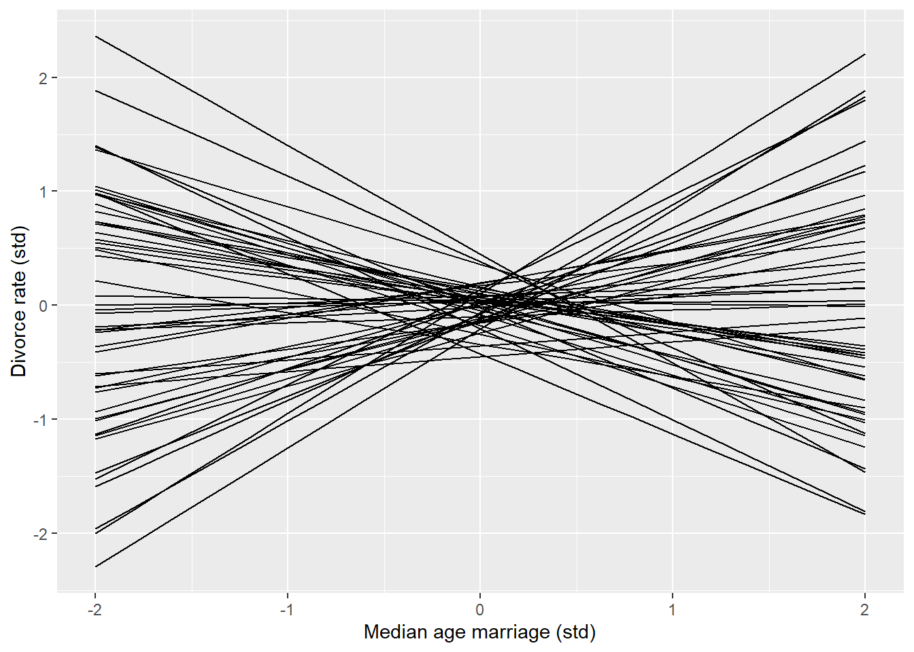
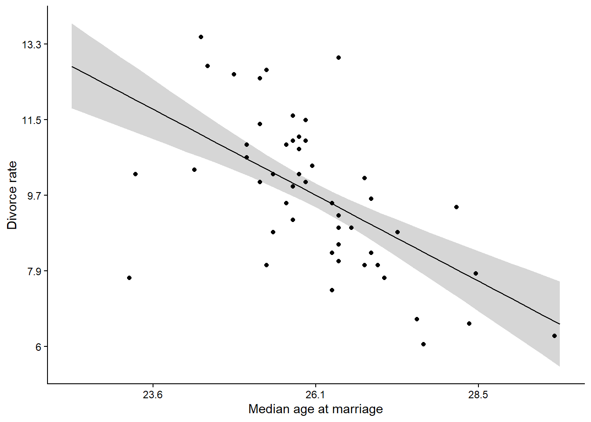
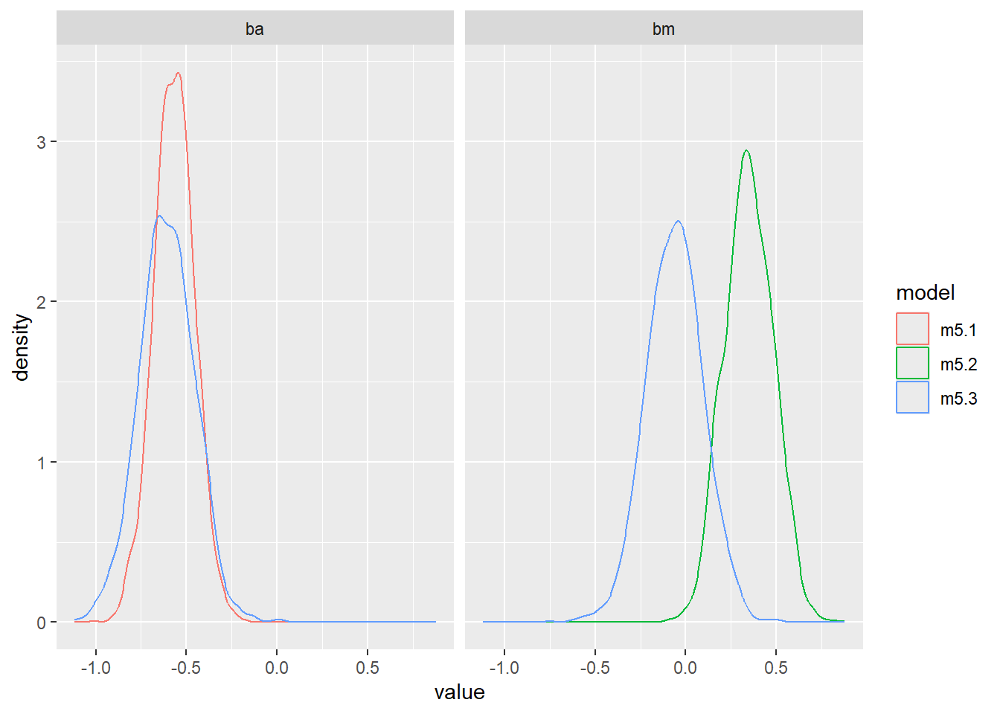

# Loading packages
library(cmdstanr)
library(rethinking)
library(tidyverse)6 Chapter 5: The Many variables & The Spurious Waffles
6.1 Model 5.1
The first model of the chapter does not contain any surprises. However, a method for drawing samples from the prior is presented in the form of the function extract.prior. We can include similar behaviour into our Stan models by making sampling from the likelihood conditional on a flag.
The model is defined as:
\[ \begin{align} D_i &\sim \operatorname{Normal}(\mu_i, \sigma) \\ \mu &= \alpha + \beta_A A \\ \alpha &\sim \operatorname{Normal}(0, 0.2) \\ \beta_A &\sim \operatorname{Normal}(0, 0.5) \\ \sigma &\sim \operatorname{Exponential}(1) \end{align} \]
/* Model 5.1
This model includes a flag indicating
when to sample from the prior only.
*/
data {
int<lower=0> N; // Number of obs
vector[N] D; // Divorce rate
vector[N] A; // Age at marriage
/* Prior only flag
will be used to enable prior
simulations from the model. Set to 1 if
sampling from prior only. */
int<lower=0, upper=1> prior_only;
}
parameters {
real a; // Intercept
real ba; // Slope for A
real<lower=0> sigma; // Sigma with lwr bound
}
transformed parameters {
array[N] real mu;
for (i in 1:N) {
mu[i] = a + ba * A[i];
}
}
model {
a ~ normal(0, 0.2);
ba ~ normal(0, 0.5);
sigma ~ exponential(1);
if (prior_only == 0) {
D ~ normal(mu, sigma);
}
}
generated quantities {
array[N] real y_rep;
y_rep = normal_rng(mu, sigma);
}To run the model we will have to prepare the data and include the flag variable.
# Loading data
data(WaffleDivorce)
dat <- WaffleDivorce
dl <- list(
N = length(dat$Divorce),
D = standardize(dat$Divorce),
M = standardize(dat$Marriage),
A = standardize(dat$MedianAgeMarriage),
prior_only = 1
)Next we are compiling the model.
# Compiling the model
m5.1 <- cmdstan_model(stan_file = "models/m5-1.stan",
exe_file = "models/m5-1.exe")The model is now ready to run using only the prior.
fit5.1 <- m5.1$sample(
data = dl, # The list of variables
iter_sampling = 2000, # Number of iterations for sampling
iter_warmup = 1000, # Number of warm-up iterations
chains = 1, # Number of Markov chains
refresh = 1000 # Number of iterations before each print
)Running MCMC with 1 chain...
Chain 1 Iteration: 1 / 3000 [ 0%] (Warmup)
Chain 1 Iteration: 1000 / 3000 [ 33%] (Warmup)
Chain 1 Iteration: 1001 / 3000 [ 33%] (Sampling)
Chain 1 Iteration: 2000 / 3000 [ 66%] (Sampling)
Chain 1 Iteration: 3000 / 3000 [100%] (Sampling)
Chain 1 finished in 0.2 seconds.The prior model samples fine. Using the draws we can construct a prior predictive check similar to Figure 5.3 (McElreath 2020, 127).
McElreath, Richard. 2020. Statistical Rethinking: A Bayesian Course with Examples in R and Stan. Second edition. Chapman & Hall/CRC Texts in Statistical Science Series. Boca Raton: CRC Press.
draws5.1 <- fit5.1$draws(format = "df")
draws5.1 |>
select(a, ba, .iteration) |>
slice_sample(n = 50) |>
expand_grid(A = seq(from = -2, to = 2, by = 0.2)) |>
ggplot(aes(A, a + ba * A, group = .iteration)) +
geom_line() +
labs(x = "Median age marriage (std)",
y = "Divorce rate (std)")Warning: Dropping 'draws_df' class as required metadata was removed.
The benefits of using the same model program for prior and posterior analysis maybe becomes more obvious when the model gets complex and there is no easy way to do prior simulations. Additionally, the prior_only flag saves us from having to re-compile a new model that contains the likelihood.
We will do posterior predictions next. All we need to change is the flag variable.
dl$prior_only <- 0
fit5.1 <- m5.1$sample(
data = dl, # The list of variables
iter_sampling = 2000, # Number of iterations for sampling
iter_warmup = 1000, # Number of warm-up iterations
chains = 1, # Number of Markov chains
refresh = 1000 # Number of iterations before each print
)Running MCMC with 1 chain...
Chain 1 Iteration: 1 / 3000 [ 0%] (Warmup)
Chain 1 Iteration: 1000 / 3000 [ 33%] (Warmup)
Chain 1 Iteration: 1001 / 3000 [ 33%] (Sampling)
Chain 1 Iteration: 2000 / 3000 [ 66%] (Sampling)
Chain 1 Iteration: 3000 / 3000 [100%] (Sampling)
Chain 1 finished in 0.2 seconds.draws5.1 <- fit5.1$draws(format = "df")Plotting the posterior and data provides a check for the model.
draws5.1 |>
select(a, ba, .iteration) |>
expand_grid(A = seq(from = -3, to = 3, by = 0.2)) |>
mutate(y_pred = a + ba * A) |>
summarise(.by = A,
m = mean(y_pred),
lwr = quantile(y_pred, 0.055),
upr = quantile(y_pred, 0.945)) |>
ggplot(aes(A, m)) +
geom_ribbon(aes(ymin = lwr,
ymax = upr ),
alpha = 0.2) +
geom_line() +
geom_point(data = data.frame(A = dl$A,
D = dl$D),
aes(A, D)) +
scale_x_continuous(
labels = function(x) round(x * sd(dat$MedianAgeMarriage) + mean(dat$MedianAgeMarriage),1),
name = "Median age at marriage") +
scale_y_continuous(
labels = function(y) round(y * sd(dat$Divorce) + mean(dat$Divorce),1),
name = "Divorce rate") +
theme_classic()Warning: Dropping 'draws_df' class as required metadata was removed.
6.2 Model 5.2
Model 5.2 does not introduce anything new. We fit it to able to compare posterior estimates later on.
The model is defined as:
\[ \begin{align} D_i &\sim \operatorname{Normal}(\mu_i, \sigma) \\ \mu &= \alpha + \beta_M M \\ \alpha &\sim \operatorname{Normal}(0, 0.2) \\ \beta_M &\sim \operatorname{Normal}(0, 0.5) \\ \sigma &\sim \operatorname{Exponential}(1) \end{align} \]
/* Model 5.2
This model keeps the flag for prior sampling
It changes from model 5.1 by including another
predictor variable, M for marriage rate.
*/
data {
int<lower=0> N; // Number of obs
vector[N] D; // Divorce rate
vector[N] M; // Marriage rate
/* Prior only flag
will be used to enable prior
simulations from the model. Set to 1 if
sampling from prior only. */
int<lower=0, upper=1> prior_only;
}
parameters {
real a; // Intercept
real bm; // Slope for M
real<lower=0> sigma; // Sigma with lwr bound
}
transformed parameters {
array[N] real mu;
for (i in 1:N) {
mu[i] = a + bm * M[i];
}
}
model {
a ~ normal(0, 0.2);
bm ~ normal(0, 0.5);
sigma ~ exponential(1);
if (prior_only == 0) {
D ~ normal(mu, sigma);
}
}
generated quantities {
array[N] real y_rep;
y_rep = normal_rng(mu, sigma);
}# Compiling the model
m5.2 <- cmdstan_model(stan_file = "models/m5-2.stan",
exe_file = "models/m5-2.exe")
fit5.2 <- m5.2$sample(
data = dl, # The list of variables
iter_sampling = 2000, # Number of iterations for sampling
iter_warmup = 1000, # Number of warm-up iterations
chains = 1, # Number of Markov chains
refresh = 1000 # Number of iterations before each print
)Running MCMC with 1 chain...
Chain 1 Iteration: 1 / 3000 [ 0%] (Warmup)
Chain 1 Iteration: 1000 / 3000 [ 33%] (Warmup)
Chain 1 Iteration: 1001 / 3000 [ 33%] (Sampling)
Chain 1 Iteration: 2000 / 3000 [ 66%] (Sampling)
Chain 1 Iteration: 3000 / 3000 [100%] (Sampling)
Chain 1 finished in 0.2 seconds.draws5.2 <- fit5.2$draws(format = "df")
precis(fit5.2)100 vector or matrix parameters hidden. Use depth=2 to show them. mean sd 5.5% 94.5% rhat ess_bulk
a -0.0007510782 0.11335820 -0.1848731 0.1820434 1.0008249 1641.079
bm 0.3482612032 0.13454620 0.1390926 0.5667404 0.9999204 1947.066
sigma 0.9496538957 0.09132949 0.8161046 1.1039732 1.0007430 1677.5826.3 Model 5.3
The model is defined as:
\[ \begin{align} D_i &\sim \operatorname{Normal}(\mu_i, \sigma) \\ \mu &= \alpha + \beta_M M + \beta_A A \\ \alpha &\sim \operatorname{Normal}(0, 0.2) \\ \beta_M &\sim \operatorname{Normal}(0, 0.5) \\ \beta_A &\sim \operatorname{Normal}(0, 0.5) \\ \sigma &\sim \operatorname{Exponential}(1) \end{align} \]
/* Model 5.3
This model keeps the flag for prior sampling
It extends model 5.1 by including an additional
predictor variable, M for marriage rate.
*/
data {
int<lower=0> N; // Number of obs
vector[N] D; // Divorce rate
vector[N] A; // Age at marriage
vector[N] M; // Marriage rate
/* Prior only flag
will be used to enable prior
simulations from the model. Set to 1 if
sampling from prior only. */
int<lower=0, upper=1> prior_only;
}
parameters {
real a; // Intercept
real ba; // Slope for A
real bm; // Slope for M
real<lower=0> sigma; // Sigma with lwr bound
}
transformed parameters {
array[N] real mu;
for (i in 1:N) {
mu[i] = a + ba * A[i] + bm * M[i];
}
}
model {
a ~ normal(0, 0.2);
ba ~ normal(0, 0.5);
bm ~ normal(0, 0.5);
sigma ~ exponential(1);
if (prior_only == 0) {
D ~ normal(mu, sigma);
}
}
generated quantities {
array[N] real y_rep;
y_rep = normal_rng(mu, sigma);
}In Model 5.3, an additional predictor variable is introduced. The data is already in the data list.
In the code block below I’m compiling the model, fitting it using the data and plotting predictions.
# Compiling the model
m5.3 <- cmdstan_model(stan_file = "models/m5-3.stan",
exe_file = "models/m5-3.exe")
fit5.3 <- m5.3$sample(
data = dl, # The list of variables
iter_sampling = 2000, # Number of iterations for sampling
iter_warmup = 1000, # Number of warm-up iterations
chains = 1, # Number of Markov chains
refresh = 1000 # Number of iterations before each print
)Running MCMC with 1 chain...
Chain 1 Iteration: 1 / 3000 [ 0%] (Warmup)
Chain 1 Iteration: 1000 / 3000 [ 33%] (Warmup)
Chain 1 Iteration: 1001 / 3000 [ 33%] (Sampling)
Chain 1 Iteration: 2000 / 3000 [ 66%] (Sampling)
Chain 1 Iteration: 3000 / 3000 [100%] (Sampling)
Chain 1 finished in 0.3 seconds.draws5.3 <- fit5.3$draws(format = "df")
precis(fit5.3)100 vector or matrix parameters hidden. Use depth=2 to show them. mean sd 5.5% 94.5% rhat ess_bulk
a -0.00161789 0.10020078 -0.1687970 0.1526217 1.0002517 2081.844
ba -0.60759396 0.15396359 -0.8483205 -0.3693579 1.0004662 1258.419
bm -0.06158410 0.15746664 -0.3100090 0.1899421 1.0004542 1287.190
sigma 0.82406752 0.08666529 0.6991766 0.9716729 0.9998269 1798.316Recreating the comparison between the models is done below
bind_rows(
draws5.3 |>
select(bm, ba) |>
pivot_longer(cols = everything(),
values_to = "value",
names_to = "param") |>
mutate(model = "m5.3"),
draws5.2 |>
select(bm) |>
mutate(param = "bm",
model = "m5.2") |>
select(param, value = bm, model),
draws5.1 |>
select(ba) |>
mutate(param = "ba",
model = "m5.1") |>
select(param, value = ba, model) ) |>
ggplot(aes(value, color = model)) +
geom_density() +
facet_wrap(~ param)Warning: Dropping 'draws_df' class as required metadata was removed.
Warning: Dropping 'draws_df' class as required metadata was removed.
Warning: Dropping 'draws_df' class as required metadata was removed.